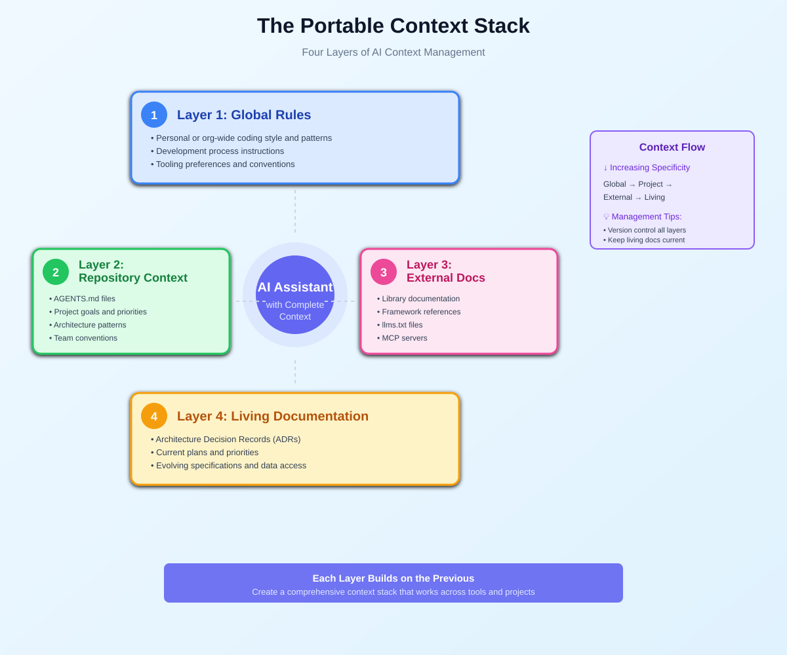
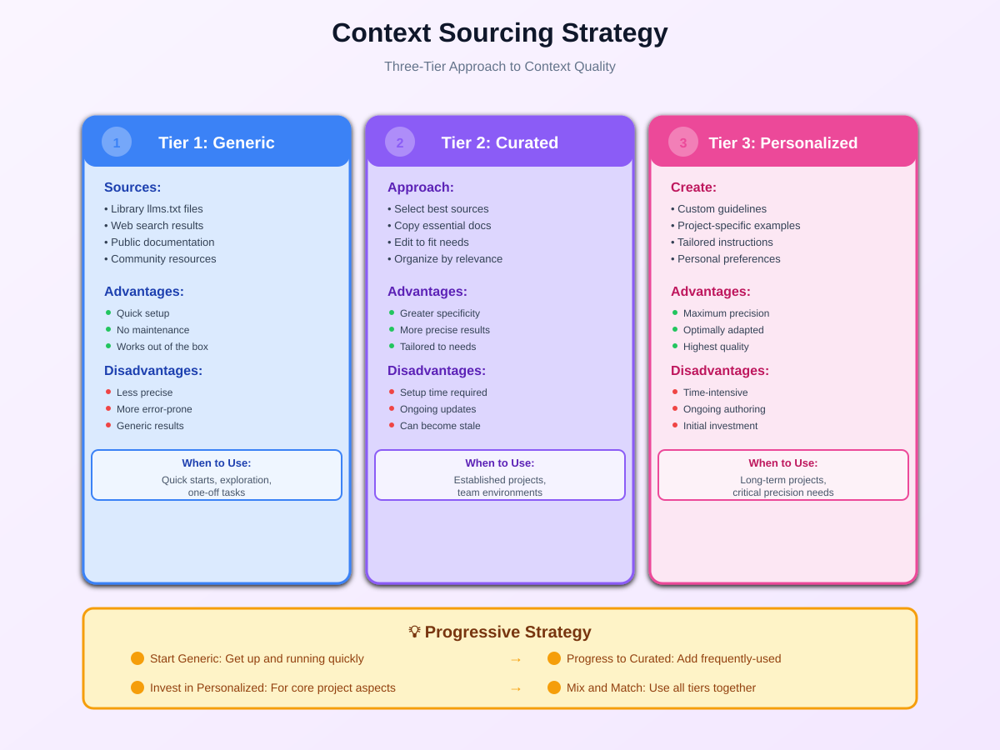
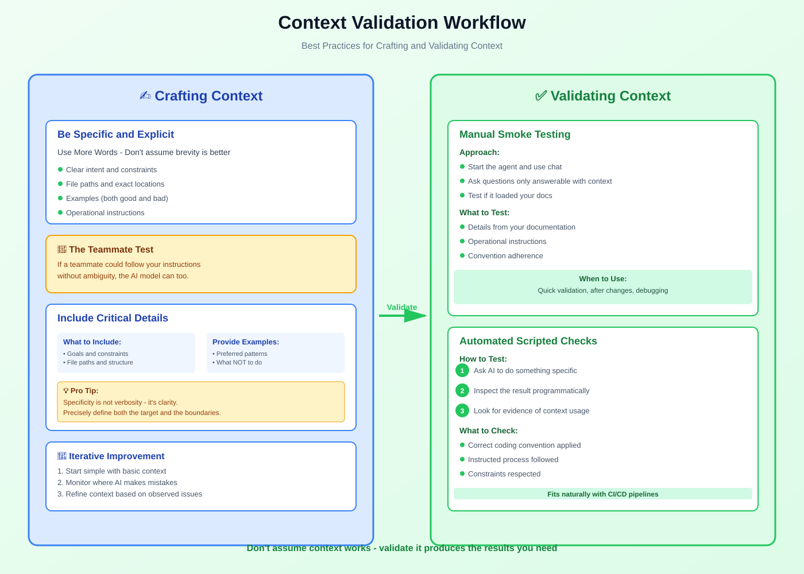

Context Engineering and Frictionless Setup
📋 Quick Navigation
- Introduction
- The Promise of Context Engineering
- What Context Engineering Means
- Treating AI Like a Collaborator
- The Portable Context Stack
- Context Sourcing Strategy
- Best Practices
- Tools and Resources
- References and Further Reading
🎯 Introduction
Context engineering is the practice of providing AI models with all the information they need to complete tasks with full knowledge of your project, style, and conventions. This comprehensive guide explores how to make your AI assistant fully adapted to your specific needs, enabling repeatability, precision, and confident delegation.
Core Understanding:
Context is a performance multiplier. An assistant's performance is directly proportional to the quality, precision, and completeness of the context it receives. Without proper context, AI models produce generic, average results. With complete context, they work exactly the way you want.
The Challenge:
Without sufficient context, models guess. They rarely indicate when they're missing information; instead, they produce something plausible that may be inconsistent with your style, goals, specifications, and architecture—potentially wasting time on corrections.
The Solution:
A systematic approach to context engineering that turns AI from a generic tool into an expert that follows your guidance precisely.

🚀 The Promise of Context Engineering
Effective context engineering delivers three critical outcomes that transform how you work with AI assistants.
Three Core Outcomes
Repeatability and Precision:
-
Results consistently reflect your preferences and project goals
-
Outputs follow established patterns and conventions
-
Predictable behavior across different tasks and sessions
-
Reduced variance in code quality and style
Project-Fit:
-
Outputs automatically follow your project structure
-
Code aligns with your architecture and design patterns
-
Generated content respects your established guidelines
-
Seamless integration with existing codebase
Delegation with Confidence:
-
Focus on high-level design and strategic decisions
-
Delegate complete tasks knowing they'll be done correctly
-
Reduce time spent on corrections and rework
-
Trust the assistant to handle implementation details
The Performance Multiplier
Without Context:
-
Generic, non-specific output
-
Inconsistent with your style and goals
-
Requires extensive corrections
-
Wastes time on basic issues
With Complete Context:
-
Tailored, precise output
-
Consistent with project standards
-
Minimal corrections needed
-
Dependable delegation that respects how your project works
💡 What Context Engineering Means
Context engineering is the practice of providing an AI model with all the information it needs—instructions and documentation included—to complete tasks with full knowledge. For coding assistants, this means giving everything required to complete a coding task effectively.
Three Foundational Ideas
Portable Context Stack:
-
Reusable across projects
-
Specialized for complex work
-
Layered and organized
-
Easy to maintain and evolve
Strategic Context Sourcing:
-
Framework and library documentation
-
Team conventions and standards
-
Project-specific guidelines
-
External resources and references
Context Validation:
-
Verify context produces expected results
-
Test that context is actually being used
-
Ensure completeness and accuracy
-
Iterate and improve based on outcomes
Key Principles
Explicitness Over Implicitness:
With human collaborators, implicit context (experience, conversations, repository browsing) fills gaps. AI doesn't have that, so you must be explicit about everything.
Documentation as Code:
Treat context files as first-class citizens in your codebase. Version control them, review them, and maintain them with the same care as your source code.
Progressive Enhancement:
Start with basic context and progressively add detail as you discover what works best for your specific needs and workflows.
👥 Treating AI Like a Collaborator
Think of an AI agent as another contributor joining your team. You're not anthropomorphizing it; you're ensuring it has what any newcomer would need to be effective.
Essential Onboarding Elements
Project Artifacts:
-
The codebase itself
-
Specifications and requirements documents
-
Design documentation and diagrams
-
Architecture decision records (ADRs)
Documentation:
-
APIs you use and their documentation
-
Project architecture and structure
-
System dependencies and integrations
-
Deployment and infrastructure details
Examples:
-
What "good" code looks like in your project
-
Preferred patterns and implementations
-
Examples of what NOT to do
-
Common pitfalls and how to avoid them
Constraints:
-
Coding conventions with clear rules
-
Style guides and formatting standards
-
Testing requirements and patterns
-
Security and compliance guidelines
The Difference with AI
Human Collaborators:
-
Build implicit understanding over time
-
Learn through hallway conversations
-
Browse and explore the repository
-
Ask questions when uncertain
AI Assistants:
-
Need explicit instructions for everything
-
Cannot build implicit understanding
-
Rely entirely on provided context
-
Produce plausible output even when uncertain
The Implication:
You must be thorough and explicit in your context engineering. Anything not explicitly stated will be guessed or ignored.
📚 The Portable Context Stack
To manage context consistently across tools and projects, use a layered stack. Context is mostly text (often Markdown), sometimes images or other media. The layers are a conceptual aid for designing and maintaining your setup.
Layer 1: Global Rules
Personal or organization-wide rules that should hold for any work you do. These are a foundation worth investing in because they personalize how assistants and agents behave.
Coding Style and Patterns:
-
Language-specific preferences (e.g., list comprehensions over for-loops in Python)
-
Architectural style preferences (functional vs object-oriented)
-
Naming conventions for variables, functions, and classes
-
Code organization principles
Development Process Instructions:
-
Branch management strategy (always use feature branches)
-
Testing approach (favor TDD, write tests first)
-
Code review requirements and standards
-
Documentation requirements for code changes
Tooling Preferences:
-
Preferred package managers (e.g., UV for Python instead of Poetry or pip)
-
Build tool configurations
-
Linter and formatter settings
-
IDE or editor preferences
Operational Conventions:
-
Commit message formats and standards
-
Logging and debugging practices
-
Error handling patterns
-
Performance optimization guidelines
Management:
These evolve as you learn. Manage them centrally using tools like Ruler to maintain a repository of rules in your home directory and apply them across tools and projects.
Layer 2: Repository and Project-Level Context
Rules and context that apply to a specific project. This is often the most valuable layer because it captures goals, priorities, structure, and where things belong.
Project-Specific Guidelines:
-
Project goals and priorities
-
Architecture and design patterns used
-
Directory structure and file organization
-
Module boundaries and responsibilities
The AGENTS.md Standard:
An emerging standard is a file named AGENTS.md at the repository root (and optionally in subdirectories for local scopes). Some tools use other formats:
-
CLAUDE.md for Claude-specific projects
-
.cursorrules for Cursor IDE
-
Custom Instructions in VS Code for GitHub Copilot
Team Consistency:
In teams, shared project rules keep work consistent. Everyone's AI assistant follows the same guidelines, producing uniform code across contributors.
Layer 3: External and Third-Party Documentation
Documentation for libraries, frameworks, and tools you don't control.
Strategies:
Embedded Documentation:
-
Bring docs into the repo when they're foundational
-
Use when documentation doesn't change often
-
Best for continuously-used references
Linked Documentation:
-
Link to docs and let the agent fetch them when needed
-
Increasingly common with modern AI tools
-
Reduces repository size
MCP Servers:
Use Model Context Protocol (MCP) servers to let an agent interactively retrieve documentation at runtime.
The llms.txt Convention:
llms.txt is a simple text file written for AI models. Many projects (especially open source) publish one with:
-
Links to the best documentation
-
Examples and usage notes
-
Maintainer-curated essential resources
Finding llms.txt files:
-
directory.llmstxt.cloud - Searchable llms.txt directory
-
llmstxt.site - Another llms.txt registry
Layer 4: Living Documentation
Keep documentation up to date. This is always good practice, but with AI it's essential: the model won't know docs are stale unless you update them.
What to Maintain:
Architectural Decisions:
-
Architecture Decision Records (ADRs) in accessible locations
-
Design rationale and trade-offs
-
Technology choices and reasoning
Plans:
-
Current priorities and order of work
-
Roadmap and upcoming features
-
Known issues and technical debt
Specifications:
-
Requirements that evolve with the project
-
Feature specifications and user stories
-
API contracts and interfaces
Data Access:
-
Data files in the repository
-
Links to external data sources
-
Schema documentation
-
Sample data for testing
AI-Assisted Maintenance:
AI can help you maintain living documentation. With developer steering, you can:
-
Generate documentation from code
-
Update docs when code changes
-
Identify stale or outdated documentation
-
Keep specifications synchronized with implementation
🎯 Context Sourcing Strategy
Think of sourcing as three tiers, each with different trade-offs between ease of setup and precision of results.

Tier 1: Generic Context
Grab what's available "as is" from public sources.
Sources:
-
Library llms.txt files
-
Web search results
-
Public documentation
-
Community resources
Advantages:
-
Quick to set up
-
No maintenance required
-
Useful as a safety net
-
Works out of the box
Disadvantages:
-
Less precise
-
More error-prone
-
May include irrelevant information
-
Generic rather than project-specific
When to Use:
-
Getting started quickly
-
Exploring new libraries
-
One-off tasks
-
Supplemental information
Tier 2: Curated Context
Select the best sources for your project and refine them.
Approach:
-
Link to the right pages
-
Copy essential docs into your repo
-
Edit them to fit your needs
-
Organize by relevance
Advantages:
-
Greater specificity
-
More precise results
-
Tailored to your needs
-
Reduced noise
Disadvantages:
-
Requires setup time
-
Needs ongoing updates
-
More maintenance effort
-
Can become stale
When to Use:
-
Established projects
-
Frequently-used libraries
-
Critical documentation
-
Team environments
Tier 3: Personalized and Project-Specific Context
Author context specifically for your project or personal use.
What to Create:
-
Custom guidelines and conventions
-
Project-specific examples
-
Tailored instructions
-
Personalized preferences
Advantages:
-
Maximum precision
-
Optimally adapted to your needs
-
Reflects your preferences exactly
-
Highest quality results
Disadvantages:
-
Most time-intensive
-
Requires ongoing authoring
-
Needs regular updates
-
Initial investment required
When to Use:
-
Long-term projects
-
Team standardization
-
Complex requirements
-
When precision is critical
Choosing the Right Tier
Start Generic:
Begin with Tier 1 to get up and running quickly.
Progress to Curated:
As you identify frequently-used resources, move them to Tier 2.
Invest in Personalized:
For core aspects of your project, create Tier 3 context for maximum precision.
Mix and Match:
Use different tiers for different aspects of your project based on their importance and frequency of use.
✅ Best Practices
Crafting effective context requires deliberate thought and validation. Follow these practices to ensure your context delivers the results you need.

Crafting Context: Be Specific and Explicit
Use More Words:
Don't assume brevity is better. Say exactly what you need and don't want.
Include Critical Details:
Clear Intent and Constraints:
-
What you want to achieve
-
What must not change
-
Boundaries and limitations
-
Success criteria
File Paths and Exact Locations:
-
Where files should be created
-
Where to find resources
-
Directory structure expectations
-
Naming conventions
Examples:
-
Preferred patterns (what to do)
-
Discouraged patterns (what NOT to do)
-
Good and bad examples side by side
-
Real examples from your codebase
Operational Instructions:
-
When to use MCP servers versus local docs
-
How to handle edge cases
-
Process for specific scenarios
-
Decision-making guidelines
The Teammate Test
Ask Yourself:
If a teammate could follow your instructions without ambiguity, the model can too.
If Unclear:
Add more detail, provide examples, and be more explicit about expectations.
Validating Context
Don't assume your context works. Decide how you'll ensure it does.
Smoke Testing (Manual):
Approach:
-
Start the agent
-
Use chat to ask questions
-
Test if it loaded your context
What to Test:
-
Ask about details that live in your docs
-
Request explanation of operational instructions
-
Check if it follows your conventions
-
Verify it uses your preferred patterns
When to Use:
-
Quick validation
-
After context changes
-
For new team members
-
Debugging context issues
Scripted Checks (Automated):
Approach:
For larger, multi-person projects, write tests that demonstrate the agent used your context.
How to Test:
-
Ask it to do something specific
-
Inspect the result
-
Look for evidence of context usage
What to Check:
-
Applied correct coding convention
-
Followed instructed process
-
Used specified tools or patterns
-
Respected constraints and boundaries
Integration:
This fits naturally with automation and continuous integration. Add context validation to your CI pipeline.
When to Use:
-
Team environments
-
Critical projects
-
Continuous integration
-
Regular validation cycles
Iterative Improvement
Start Simple:
Begin with basic context and add detail progressively.
Monitor Results:
Pay attention to where the AI makes mistakes or misunderstands.
Refine Context:
Update context based on observed issues and improve continuously.
Document Learnings:
Keep notes on what works well and what doesn't for future reference.
🛠️ Tools and Resources
Context Management Tools
Rule Management:
-
Ruler - Apply the same rules to all coding agents across projects
-
AGENTS.md - Standard format for project-level AI instructions
-
CLAUDE.md - Claude-specific context format
IDE Integration:
-
Custom Instructions in VS Code - GitHub Copilot custom instructions
-
Cursor Rules - Cursor IDE rule configuration
-
Cline Rules - Cline VS Code extension rules
MCP Servers for Context
General Purpose:
-
Context7 - MCP server for web context retrieval
-
Tavily MCP - Search and research MCP server
Code and Documentation:
-
GitMCP - Git repository access via MCP
-
DeepWiki MCP - Wiki and documentation MCP server
-
GitHub MCP - GitHub API access via MCP
Documentation Standards
llms.txt Resources:
-
llms.txt Standard - Official specification and guidelines
-
directory.llmstxt.cloud - Searchable directory of llms.txt files
-
llmstxt.site - Alternative llms.txt registry
Documentation Formats:
-
Product Requirements Documents (PRD) - How to write effective PRDs
-
Architecture Decision Records (ADR) - Document architectural decisions
-
API Documentation Best Practices - Creating clear API docs
Guides and Tutorials
Context Engineering:
-
Guide to Writing AGENTS.md Files - Comprehensive AGENTS.md guide
-
AGENTS.md May Trick Us Into Writing Better Docs - Simon Willison's perspective
Development Documentation:
-
Creating a Coding Style Guide - Google's approach to style guides
-
Living Documentation Guide - Everything about living documentation
-
Documentation as Code - Treating docs like code
📚 References and Further Reading
Foundational Concepts
Context Engineering Principles:
-
The Importance of Context in AI - Why context determines AI performance
-
Prompt Engineering vs Context Engineering - Understanding the distinction
-
Building Effective AI Context - OpenAI's guide to context
Documentation Best Practices:
-
Write the Docs Guide - Comprehensive documentation guidance
-
The Documentation System - Divio's documentation framework
-
Docs for Developers - Developer-focused documentation
Tool-Specific Resources
AGENTS.md and Context Files:
-
AGENTS.md Specification - Official spec and examples
-
Context File Examples - Real-world examples on GitHub
-
Best Practices for AI Instructions - Anthropic's recommendations
MCP and Integration:
-
Model Context Protocol Documentation - Official MCP docs
-
Building MCP Servers - Creating custom MCP servers
-
MCP Server Examples - Open-source MCP server implementations
Advanced Topics
Living Documentation:
-
Behavior-Driven Development - BDD and living documentation
-
Architecture Decision Records - ADR templates and examples
-
Documenting Architecture - C4 model for software architecture diagrams
Team Practices:
-
Team Context Management - Martin Fowler on developer effectiveness
-
Scaling Context Across Teams - Documentation at scale
-
Code Review Best Practices - Google's code review guide
Key Takeaways
Remember:
Context is a performance multiplier. The quality of your AI assistant's work is directly proportional to the quality of context you provide.
Three Pillars:
-
Specificity: Be explicit about everything
-
Organization: Use a layered context stack
-
Validation: Test that context works as intended
Progressive Approach:
Start with basic context, validate it works, then progressively enhance based on your specific needs and learnings.
Last Updated: October 2025